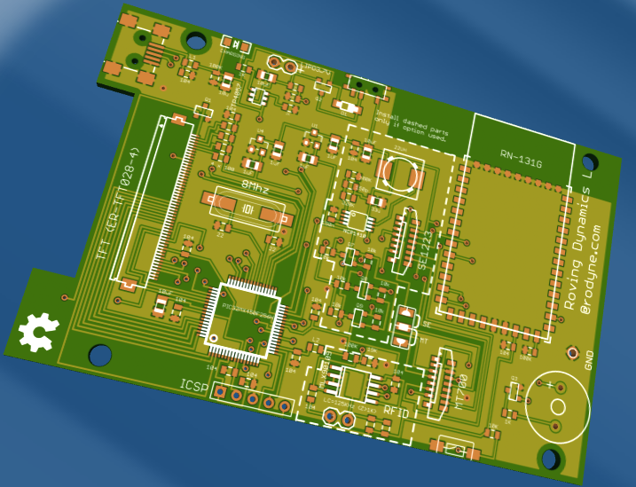

While I’m looking into writing some of the firmware, and a PC Program to handle all the comms I thought I’d better fix all the hardware bugs I found and get a new version out.
Version 4 was just me updating the schematic for mistakes as discussed in the last post, but I thought about the mechanics a bit and decided to risk a complete new layout with the TFT on the back of the PCB and while I’m at it support the MT700 barcode scanner.
So we’ve quickly skipped from version 4 to 5 which will look like below.. 
The board is 90mm x 60mm and is currently being manufactured at smart prototyping.
Design files are here – Mobile Terminal Eagle files Version 1.0e (Remember, there are still errors in this design, best to wait until I get to a final version to build/copy)
Note I’ve moved to upright FFC connectors and now support both barcode scanner types , for the MT700 leave out the 5V and level translation components and setting the correct position on the solder jumper to MT, for the SE1223 populate all the components and set the jumper to SE, (the solder jumper is used to loop RTS to CTS on whichever scanner is used).
I’ve decided to stick with the same TFT and WIFI for now as they both work and I’m getting more familiar with their operations.
Since the last post I managed to get the correct signals out of the RFID chip after using an RFID coil off an old reader and a improvised 5nf cap. I also managed to get the unit to talk to a simple PC program and for the program to talk back so the foundations are looking good!
Note I just noticed the USB is still not connected correctly in this version (Vusb connected to USB 5V not 3.3V and the Vbus (USB Power OK signal) which should be connected to the USB 5V is not connected, if you want to use the USB wait for next HW Fix or manually fix it before getting a board made.
Anyway, things may go a bit quiet again now while I work on some big upgrades to the Indevin Winery Management program for vintage 2014.